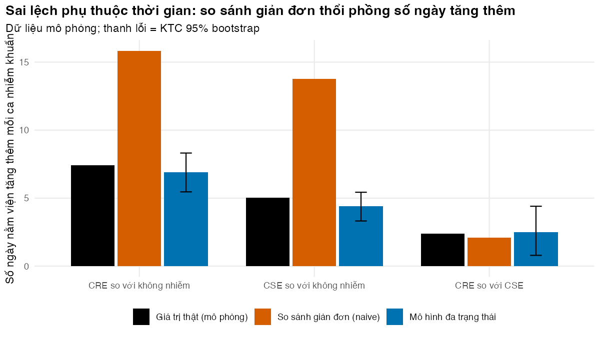

Bài 2: Thời gian nằm viện và chi phí quy thuộc: sai lệch phụ thuộc thời gian
Ước tính đúng số ngày nằm viện tăng thêm do nhiễm khuẩn CRE bằng mô hình đa trạng thái trên dữ liệu mô phỏng
Vì sao bạn nên quan tâm?
Ở ba ICU nhi của Bệnh viện Nhi Trung ương, trẻ mắc phải CRE trong lúc nằm viện ở lại lâu hơn 6.2 ngày và tốn thêm US$557 so với trẻ không mắc phải (Garpvall và c.s. 2021). Chỉ riêng tiền giường, giá dịch vụ BHYT của một ngày ICU ở bệnh viện hạng đặc biệt là 1,017,300 VNĐ, bằng 25 bát phở (Bộ Y tế 2024). Nhưng trẻ nằm lâu có nhiều ngày phơi nhiễm hơn, nên một phần khoảng chênh là những ngày đã nằm trước khi mắc CRE. Trong mô hình của bài, so sánh giản đơn cho số ngày tăng thêm gấp hơn hai lần giá trị thật. Bài này giúp bạn chọn đúng con số ngày nằm viện tăng thêm trước khi đưa nó vào đề xuất kinh phí cho kiểm soát nhiễm khuẩn.
Mục tiêu học tập
Sau bài này, bạn có thể:
Giải thích sai lệch phụ thuộc thời gian (time-dependent bias) và vì sao nó thổi phồng thời gian nằm viện (length of stay, LOS) tăng thêm do nhiễm khuẩn bệnh viện.
Chuyển dữ liệu nằm viện sang dạng đa trạng thái và ước tính các nguy cơ tức thời (hazard) chuyển trạng thái bằng tỷ số “số lần chuyển trên thời gian có nguy cơ”.
Tính số ngày nằm viện và xác suất tử vong tăng thêm theo hai kịch bản phản thực của Bài 1, nêu rõ người đối chứng là ai, kèm khoảng tin cậy bootstrap.
Quy đổi số ngày tăng thêm thành chi phí, và nêu giới hạn của cách quy đổi này.
Ý chính
Nhiễm khuẩn bệnh viện (healthcare-associated infection, NKBV) xảy ra giữa đợt nằm viện. So sánh tổng thời gian nằm viện của người có và không có NKBV tính cả những ngày trước nhiễm khuẩn vào “tác động”. Đó là sai lệch phụ thuộc thời gian; nó thường phóng đại kết quả nhiều lần (Barnett và c.s. 2011).
Với nguy cơ tức thời không đổi: \(\hat h_{jk}\) = số lần chuyển \(j \to k\) chia cho tổng số ngày ở trạng thái \(j\). Thời gian còn lại ở trạng thái \(j\) trung bình là \(1/h_{j\bullet}\).
Ra viện còn sống và tử vong là hai nguy cơ cạnh tranh (competing risks). Không được coi tử vong là kiểm duyệt.
Có hai cách chọn người đối chứng: “bỏ nhiễm khuẩn” (không bao giờ nhiễm) và “chưa nhiễm tại thời điểm s” (còn có thể nhiễm về sau). Hai cách cho hai số khác nhau; gói etm tính theo cách thứ hai.
Kiểm tra phương pháp bằng dữ liệu mô phỏng có sẵn “giá trị thật”, kể cả kịch bản nhiễm khuẩn không có tác động gì.
Nội dung
Một so sánh trông có vẻ hiển nhiên
Ở ba ICU nhi của Bệnh viện Nhi Trung ương, người bệnh mắc phải Enterobacterales kháng carbapenem (carbapenem-resistant Enterobacterales, CRE), tức định cư (colonisation) CRE trong lúc nằm viện, có tổng thời gian nằm viện 3.26 tuần, so với 2.37 tuần ở người không mắc phải (Garpvall và c.s. 2021). Mẫu gồm 244 người âm tính khi nhập viện và được sàng lọc hơn hai lần. Đây là tổng thời gian nằm viện, không phải thời gian sau nhiễm khuẩn, và định cư khác nhiễm khuẩn: chỉ 14% so với 2% có nhiễm khuẩn bệnh viện xác nhận bằng nuôi cấy. Định cư CRE có làm người bệnh nằm thêm 6.2 ngày không? Chưa chắc. Người nằm viện lâu có nhiều ngày phơi nhiễm hơn nên dễ mắc phải CRE hơn, và một phần khoảng chênh là những ngày đã nằm trước khi mắc phải. Khảo sát toàn quốc công bố năm 2025 cũng chỉ có so sánh thô kiểu này: người nhiễm CRE nằm viện 10.4 ngày, người nhiễm chủng nhạy 8.9 ngày (Larsson và c.s. 2025).
Hãy hình dung hai người bệnh giống hệt nhau. Người A nhiễm CRE vào ngày \(t\) rồi nằm thêm \(u\) ngày. Người B không nhiễm và ra viện đúng ngày \(t\). So sánh giản đơn (naive) quy cả \(t + u\) ngày của A cho nhóm “có nhiễm khuẩn”, dù trong \(t\) ngày đầu A hoàn toàn giống B. Cơ chế này giống sai lệch thời gian bất tử (immortal time bias): người bệnh phải “trụ lại” trong viện đến lúc bị nhiễm thì mới vào nhóm nhiễm. Trong mô phỏng của Barnett và cộng sự, cách làm bỏ qua thời điểm nhiễm khuẩn luôn ước tính quá cao số ngày tăng thêm (Barnett và c.s. 2011).
Mô hình đa trạng thái
Người bệnh vào viện ở trạng thái “chưa nhiễm khuẩn”, từ đó có thể nhiễm khuẩn nhạy carbapenem (CSE), nhiễm CRE, ra viện còn sống hoặc tử vong. Sau khi nhiễm khuẩn, chỉ còn hai lối ra.
flowchart LR A["Đang nằm viện<br/>chưa nhiễm khuẩn"] -->|"h(A→S)"| S["Nhiễm khuẩn nhạy<br/>(CSE)"] A -->|"h(A→R)"| R["Nhiễm khuẩn CRE"] A --> D["Ra viện còn sống"] A --> X["Tử vong"] S --> D S --> X R --> D R --> X
flowchart LR
A["Đang nằm viện<br/>chưa nhiễm khuẩn"] -->|"h(A→S)"| S["Nhiễm khuẩn nhạy<br/>(CSE)"]
A -->|"h(A→R)"| R["Nhiễm khuẩn CRE"]
A --> D["Ra viện còn sống"]
A --> X["Tử vong"]
S --> D
S --> X
R --> D
R --> X
Dữ liệu được chuyển sang dạng “đợt” (episode): mỗi người bệnh có một dòng cho mỗi trạng thái đã đi qua, với thời điểm vào, thời điểm ra và trạng thái đến. Người bệnh nhiễm CRE vào ngày \(t_1\) và ra viện ngày \(t_2\) có hai dòng: (chưa nhiễm, \(0\), \(t_1\), CRE) và (CRE, \(t_1\), \(t_2\), ra viện). Thời gian trước nhiễm khuẩn được tính cho trạng thái “chưa nhiễm”, đúng chỗ của nó.
Nếu nguy cơ tức thời không đổi theo thời gian, ước lượng hợp lý cực đại của nguy cơ chuyển \(j \to k\) là
\[
\hat h_{jk} = \frac{d_{jk}}{T_j},
\]
với \(d_{jk}\) là số lần chuyển quan sát được và \(T_j\) là tổng số ngày mọi người bệnh đã ở trạng thái \(j\). Người bị kiểm duyệt (censoring) vẫn đóng góp thời gian vào \(T_j\) nhưng không đóng góp sự kiện. Từ các \(\hat h\), ta tính số đo vượt trội như ở Bài 1. Có hai cách chọn người đối chứng, và chúng trả lời hai câu hỏi khác nhau.
(i) Bỏ nhiễm khuẩn (infection removed): đối chứng là người không bao giờ nhiễm khuẩn. Số ngày tăng thêm mỗi ca CRE là
Đây là câu hỏi của can thiệp ngăn nhiễm khuẩn (Bài 1 và Bài 5): nếu ca nhiễm không xảy ra thì người bệnh nằm bao lâu?
(ii) Chưa nhiễm tại thời điểm \(s\) (not yet infected): đối chứng là người cùng nằm viện, chưa nhiễm khuẩn, nhưng vẫn có thể nhiễm về sau. Cách này so sánh người đã nhiễm với người chưa nhiễm ở từng ngày, rồi lấy trung bình theo phân phối thời điểm nhiễm khuẩn (Schulgen và Schumacher 1996; Beyersmann và c.s. 2006; Stewardson và c.s. 2016). Gói etm(Allignol, Schumacher, và Beyersmann 2011) có hàm clos() tính theo cách này (Bài tập 4 kiểm tra điều đó). Với nguy cơ không đổi, thời gian còn lại của người chưa nhiễm là
với \(h_A\) là tổng nguy cơ rời trạng thái “chưa nhiễm”, \(h_{AS}\) và \(h_{AR}\) là nguy cơ nhiễm khuẩn nhạy và kháng, \(L_S\) và \(L_R\) là thời gian còn lại sau nhiễm khuẩn. Vì nhiễm khuẩn làm kéo dài thời gian nằm viện, đối chứng này (còn có thể nhiễm về sau) ở lại lâu hơn đối chứng (i), nên số ngày tăng thêm nhỏ hơn. Hãy chọn theo câu hỏi chính sách: đánh giá can thiệp ngăn nhiễm khuẩn cần (i); kết quả của clos trả lời câu hỏi (ii). Khi nguy cơ thay đổi theo thời gian, như trong hầu hết dữ liệu thật, dùng ước lượng không tham số Aalen–Johansen (etm); logic của hai đối chứng vẫn như trên.
Từ số ngày đến chi phí
Như ở Bài 1, chi phí bằng lượng (số ngày giường và ngày kháng sinh tăng thêm) nhân giá: giá dịch vụ BHYT cho ngày giường (Bộ Y tế 2024) và giá trúng thầu cho kháng sinh, đưa về năm 2025 (Bệnh viện Trung ương Thái Nguyên 2023; Bệnh viện Đa khoa khu vực Củ Chi 2024). Ngày giường là chi phí cơ hội chứ không phải tiền mặt. Hãy tách riêng chi phí biến đổi (thuốc, vật tư) nếu người ra quyết định cần biết tiền mặt (Graves và c.s. 2010).
Thực hành
Ta mô phỏng dữ liệu từ các nguy cơ tức thời trong params/los_sim.csv, nên biết giá trị thật (truth) để kiểm tra phương pháp. Nguy cơ tử vong sau nhiễm khuẩn được chọn để xác suất tử vong khớp số thô của khảo sát toàn quốc (31.7% sau CRE, 20.2% sau nhiễm khuẩn nhạy); các nguy cơ khác là giá trị minh họa. Thời gian nằm viện còn lại sau nhiễm khuẩn trong mô hình là 16.7 ngày (CRE) và 14.3 ngày (nhiễm khuẩn nhạy), dài hơn tổng thời gian nằm viện thô của khảo sát toàn quốc (10.4 và 8.9 ngày). Chênh lệch CRE so với nhiễm khuẩn nhạy thì cùng bậc: 2.4 ngày trong mô hình, 1.5 ngày trong khảo sát. Vì vậy hãy đọc mức tuyệt đối của số ngày và chi phí trong bài như minh họa phương pháp.
if (!isTRUE(l10n_info()[["UTF-8"]])) invisible(Sys.setlocale("LC_CTYPE", "en_US.UTF-8"))source("../_shared/R/helpers.R")source("../_shared/R/vn_data.R") # course-wide values: vn_context(), vn_prices(), vn_mx(), inflate_vnd()source("code/model.R")library(ggplot2)library(survival) # Cox models with time-dependent covariates (comes with R)p <-read_all_params()H_true <-ms_hazards_true(p)truth <-excess_measures(H_true) # known because we simulate the data ourselvesN_PATIENTS <- p$n_cohort # simulation size (a large tertiary hospital, ~1 year; params/los_sim.csv)N_BOOT <-200# bootstrap resamples (use >= 1,000 for a paper)N_BIG <-400000# size of the large-sample checks_day <-5# day at which we look at who is still uninfected (estimand check)N_HI <-8000# Exercise 4: admissions simulated ...H_INF_HI <-0.1# ... with this (high) CRE infection hazard per day
Mỗi dòng của d là một trong 20,000 lượt nhập viện: loại nhiễm khuẩn, ngày nhiễm khuẩn, thời gian nằm viện và kết cục. Kiểm tra: số dòng đúng, và ngày nhiễm khuẩn không vượt quá ngày ra viện.
outcome
infection Cens Dead Disch
none 0 1368 17423
R 4 168 321
S 5 140 571
# Checks: one row per admission, infection happens during the stay, stays are positivestopifnot(nrow(d) == N_PATIENTS, all(d$los >0),all(d$t_inf[d$inf_type !="none"] <= d$los[d$inf_type !="none"]))n_inf_r <-sum(d$inf_type =="R")n_inf_s <-sum(d$inf_type =="S")
Có 493 ca nhiễm CRE và 716 ca nhiễm CSE. Thử so sánh giản đơn (naive): trung bình tổng thời gian nằm viện của người có nhiễm khuẩn trừ đi của người không nhiễm. Dòng cuối là ngày nhiễm khuẩn trung bình.
# Naive (simple) analysis: compare the mean total stay of infected and uninfected patientsnaive <-naive_excess(d)round(rbind(truth = truth, naive = naive)[, c("los_R_none", "los_S_none", "los_R_S")], 2)
# Why: an infected patient must first stay long enough to become infectedmean_t_inf <-tapply(d$t_inf, d$inf_type, mean)[c("S", "R")] # mean day of infectionround(mean_t_inf, 1)
So sánh giản đơn cho 15.8 ngày tăng thêm mỗi ca CRE, gấp 2.1 lần giá trị thật 7.4 ngày. Người nhiễm CRE đã nằm viện trung bình 8.5 ngày trước khi bị nhiễm, và so sánh giản đơn quy cả những ngày đó cho nhiễm khuẩn.
Chuyển dữ liệu sang dạng đợt và ước tính các nguy cơ tức thời. Kiểm tra: tổng thời gian có nguy cơ của mọi đợt bằng tổng số ngày nằm viện. Bảng in ước lượng (trên) và giá trị thật (dưới).
# Multistate (episode) format: one row per state visitedms <-to_multistate(d)head(ms[ms$id %in% d$id[d$inf_type =="R"][1:2], ])
id from to entry exit
4 4 Adm InfR 0.0000000 2.8119020
20001 4 InfR Disch 2.8119020 5.9671223
6 6 Adm InfR 0.0000000 0.1361436
20002 6 InfR Disch 0.1361436 31.0479916
# Check: total time at risk across episodes equals total hospital daysstopifnot(abs(sum(ms$exit - ms$entry) -sum(d$los)) <1e-6)H_hat <-estimate_hazards(ms)round(rbind(H_hat, H_true), 4)
Đưa các nguy cơ ước lượng vào hàm excess_measures() của Bài 1 (đối chứng “bỏ nhiễm khuẩn”) và so với giá trị thật và so sánh giản đơn. Kiểm tra: ước lượng đa trạng thái gần giá trị thật, còn so sánh giản đơn thì không.
# The multistate estimate is close to the truth; the naive one is notstopifnot(abs(ms_est[["los_R_none"]] - truth[["los_R_none"]]) <2, naive[["los_R_none"]] >1.5* truth[["los_R_none"]])# CRE vs CSE is much less biased than CRE vs no infection (both groups had to "survive" to infection)stopifnot(abs(naive[["los_R_S"]] - truth[["los_R_S"]]) <abs(naive[["los_R_none"]] - truth[["los_R_none"]]))
Tính cả hai đối chứng cho cùng bộ nguy cơ thật. Đoạn mã còn kiểm tra công thức \(L_A\) bằng dữ liệu mô phỏng: thời gian còn lại của người chưa nhiễm ở ngày thứ 5 phải khớp với công thức.
# Two comparators for the same infected patient (constant hazards):# infection removed: never infected stay = 1 / (h_dis0 + h_dth0)# not yet infected : in hospital, may be infected later stay = (1 + h_AS * L_S + h_AR * L_R) / h_Anotyet <-excess_measures_notyet(H_true)est_tab <-data.frame(comparator =c("infection removed", "not yet infected"),los_R =c(truth[["los_R_none"]], notyet[["los_R_notyet"]]),los_S =c(truth[["los_S_none"]], notyet[["los_S_notyet"]]),death_R =c(truth[["death_R_none"]], notyet[["death_R_notyet"]]),death_S =c(truth[["death_S_none"]], notyet[["death_S_notyet"]]))est_tab_show <- est_tabest_tab_show[, -1] <-round(est_tab_show[, -1], 3)est_tab_show
# Check the formula for the "not yet infected" stay against the simulated data: among patients# still in hospital and uninfected on day 5, the mean remaining stay must match it (the# exponential model has no memory). Censoring at 90 days is negligible for this group.at_risk <- d$los > s_day & (d$inf_type =="none"| d$t_inf > s_day)sim_notyet <-mean(d$los[at_risk] - s_day)round(c(formula =ms_notyet_infected(H_true)[["los"]], simulated = sim_notyet, n =sum(at_risk)), 2)
formula simulated n
9.63 9.78 11074.00
stopifnot(abs(sim_notyet -ms_notyet_infected(H_true)[["los"]]) <0.4)stopifnot(notyet[["los_R_notyet"]] < truth[["los_R_none"]]) # the later-infection option shortens the contrast
Hai đối chứng cho hai số khác nhau với cùng nguy cơ thật: 7.0 ngày cho “chưa nhiễm tại thời điểm \(s\)”, so với 7.4 ngày cho “bỏ nhiễm khuẩn”; tử vong tăng thêm là 23.2 so với 24.3 điểm phần trăm. Công thức khớp với mô phỏng (9.8 so với 9.6 ngày).
Ước lượng đúng phải tìm lại được giá trị thật khi mẫu rất lớn; so sánh giản đơn thì không. Ta thử với 400,000 lượt nhập viện.
# With a very large sample the multistate estimate must recover the truth; the naive one must notset.seed(77)d_big <-simulate_admissions(p, N_BIG)est_big <-excess_measures(estimate_hazards(to_multistate(d_big)))naive_big <-naive_excess(d_big)round(rbind(truth = truth, multistate = est_big, naive = naive_big)[, c("los_R_none", "los_R_S", "death_R_none")], 3)
Với mẫu lớn, mô hình đa trạng thái cho 7.5 ngày (giá trị thật 7.4), còn so sánh giản đơn vẫn cho 16.5 ngày: sai lệch không biến mất khi có thêm dữ liệu.
Để có khoảng tin cậy, lấy mẫu lại người bệnh (bootstrap) 200 lần và lặp lại toàn bộ quy trình; một bài báo nên dùng nhiều lần lặp hơn.
Mô hình đa trạng thái ước tính 6.9 (KTC 95%: 5.5–8.3) ngày tăng thêm mỗi ca CRE so với không nhiễm khuẩn, và 2.5 (KTC 95%: 0.8–4.4) ngày so với nhiễm khuẩn nhạy. Có 6 trên 6 khoảng tin cậy chứa giá trị thật. Với so sánh giản đơn, phép so sánh CRE với CSE ít bị sai lệch hơn (2.1 so với giá trị thật 2.4 ngày), vì cả hai nhóm đều phải “trụ lại” đến lúc nhiễm khuẩn. Với tử vong, so sánh giản đơn cho 26.8 điểm phần trăm, gần với mô hình đa trạng thái (27.1) và giá trị thật (24.3); với nguy cơ không đổi, sai lệch thời gian chủ yếu ảnh hưởng đến số ngày. Với dữ liệu thật, vấn đề lớn hơn thường là gây nhiễu do mức độ nặng.
Mô hình Cox cho cùng thông điệp trên thang tỷ số nguy cơ tức thời (hazard ratio, HR). Sự kiện là “rời bệnh viện” (ra viện hoặc tử vong); HR nhỏ hơn 1 nghĩa là nằm viện lâu hơn. Gói survival đi kèm R; Surv(entry, exit, event) nhận dữ liệu dạng đợt.
# Treating infection as fixed from admission exaggerates the effect (HR further below 1)stopifnot(all(hr_tab$time_fixed < hr_tab$time_dependent))
Mô hình có biến phụ thuộc thời gian cho HR 0.58 cho CRE, gần giá trị thật 0.56. Mô hình coi nhiễm khuẩn là đặc điểm cố định cho 0.34, tức là phóng đại tác động kéo dài nằm viện. Dù vậy, HR không phải là số ngày; người ra quyết định cần số ngày và tiền.
Hình tóm tắt ba phép so sánh bằng ba phương pháp. Kiểm tra: thanh của mô hình đa trạng thái nằm gần giá trị thật, thanh giản đơn của hai phép so sánh với “không nhiễm” cao hơn hẳn.
cmp <-c("los_R_none", "los_S_none", "los_R_S")cmp_vi <-c(los_R_none ="CRE so với không nhiễm", los_S_none ="CSE so với không nhiễm",los_R_S ="CRE so với CSE")plot_df <-data.frame(comparison =factor(rep(cmp_vi[cmp], 3), levels = cmp_vi),method =factor(rep(c("Giá trị thật (mô phỏng)", "So sánh giản đơn (naive)", "Mô hình đa trạng thái"),each =3),levels =c("Giá trị thật (mô phỏng)", "So sánh giản đơn (naive)", "Mô hình đa trạng thái")),value =c(truth[cmp], naive[cmp], ms_est[cmp]),lo =c(rep(NA, 6), ci[1, cmp]),hi =c(rep(NA, 6), ci[2, cmp]))fig_bias <-ggplot(plot_df, aes(comparison, value, fill = method)) +geom_col(position =position_dodge(width =0.8), width =0.75) +geom_errorbar(aes(ymin = lo, ymax = hi), position =position_dodge(width =0.8),width =0.2, na.rm =TRUE) +scale_fill_manual(values = pal_course[c(8, 2, 1)], name =NULL) +labs(x =NULL, y ="Số ngày nằm viện tăng thêm mỗi ca nhiễm khuẩn",title ="Sai lệch phụ thuộc thời gian: so sánh giản đơn thổi phồng số ngày tăng thêm",subtitle ="Dữ liệu mô phỏng; thanh lỗi = KTC 95% bootstrap") +theme_course()save_fig(fig_bias, "l02-time-dependent-bias.png", width =8, height =4.5)

Số ngày nằm viện tăng thêm mỗi ca nhiễm khuẩn: giá trị thật, so sánh giản đơn và mô hình đa trạng thái (dữ liệu mô phỏng).
Cuối cùng, quy đổi ra tiền với chi phí đơn vị của Bài 1 (ngày giường tính theo hỗn hợp ICU và khoa thường; tỷ lệ ICU là minh họa). Kiểm tra: mọi chi phí dương, và chi phí liên quan lớn hơn chi phí quy thuộc. Dòng cuối là tỷ trọng tiền kháng sinh trong chi phí liên quan.
stopifnot(all(cost_per_inf >0), cost_per_inf[["associated"]] > cost_per_inf[["attributable"]])# Share of the associated cost that is antibiotics (the rest is bed-days)drug_share <- p$dur_abx * p$c_abx_r_day / cost_per_inf[["associated"]]round(drug_share, 2)
[1] 0.92
# Relative error of the naive comparison: on the days, and on the costrel_err <-c(days = naive[["los_R_none"]] / ms_est[["los_R_none"]] -1,cost = cost_per_inf[["naive_associated"]] / cost_per_inf[["associated"]] -1)round(rel_err, 2)
days cost
1.3 0.1
stopifnot(rel_err[["cost"]] < rel_err[["days"]])
Mỗi ca CRE tốn thêm 60.1 triệu VNĐ so với không nhiễm khuẩn và 54.9 triệu VNĐ so với nhiễm khuẩn nhạy (giá 2025). Nếu dùng so sánh giản đơn, con số đầu sẽ là 66.1 triệu VNĐ. Vì một ngày colistin phối hợp meropenem đắt gấp 3.9 lần một ngày giường ICU, tiền kháng sinh chiếm 92% chi phí liên quan; sai lệch phụ thuộc thời gian chỉ làm sai phần ngày giường, nên ở đây nó thổi phồng chi phí 10% trong khi thổi phồng số ngày 130% (cùng lấy ước lượng đa trạng thái làm mốc). Với một can thiệp chỉ rút ngắn thời gian nằm viện, sai số ngày lại là tất cả.
Mẹo thực hành
Khi xin dữ liệu bệnh viện, phải có ngày nhập viện, ngày khởi phát nhiễm khuẩn (hoặc ngày lấy mẫu dương tính), ngày ra viện và kết cục. Thiếu ngày nhiễm khuẩn thì không thể sửa sai lệch phụ thuộc thời gian.
Thử phương pháp trên dữ liệu mô phỏng có tác động bằng 0 (Bài tập 1). Phương pháp nào “tìm thấy” tác động ở đó thì không dùng được.
Với dữ liệu thật, nguy cơ tức thời hiếm khi không đổi. Hãy vẽ nguy cơ tích lũy theo thời gian trước khi chọn mô hình hằng số.
Lỗi thường gặp
Ghép cặp hoặc hồi quy trên tổng thời gian nằm viện với biến “có NKBV” cố định từ lúc nhập viện. Ghép cặp theo mức độ nặng không sửa được sai lệch phụ thuộc thời gian.
Coi tử vong là kiểm duyệt. Người tử vong sớm trông như “ra viện nhanh”; phải mô hình hóa tử vong như một lối ra cạnh tranh.
Đọc HR như số ngày. Cùng một HR có thể ứng với số ngày tăng thêm rất khác nhau, tùy nguy cơ nền.
Bài tập
Bài 1 (dễ). Mô phỏng một bệnh viện trong đó nhiễm khuẩn không làm thay đổi nguy cơ ra viện hay tử vong. Hai phương pháp cho kết quả gì?
Lời giải
Đặt nguy cơ sau nhiễm khuẩn bằng nguy cơ trước nhiễm khuẩn, rồi chạy lại cả hai phương pháp.
Giá trị thật bằng không. So sánh giản đơn vẫn “tìm thấy” 10.1 ngày tăng thêm mỗi ca CRE; mô hình đa trạng thái cho 0.2 ngày. Toàn bộ con số của so sánh giản đơn là sai lệch.
Bài 2 (vừa). Nhân ba nguy cơ nhiễm khuẩn (khoa có NKBV cao hơn nhiều, nên có nhiều ca hơn để phân tích). Sai lệch của so sánh giản đơn có giảm không? Hãy tìm công thức cho sai lệch đó khi nguy cơ không đổi.
Lời giải
# Exercise 2: triple the infection hazards; how do the two methods respond?p3 <- pp3$h_inf_s <-3* p$h_inf_s; p3$h_inf_r <-3* p$h_inf_rset.seed(12)d3 <-simulate_admissions(p3, N_PATIENTS)res3 <-rbind(truth =excess_measures(ms_hazards_true(p3)),naive =naive_excess(d3),multistate =excess_measures(estimate_hazards(to_multistate(d3))))round(res3[, 1:3], 2)
# Bias of the naive estimate (CRE vs none) at baseline and with tripled infection hazardsbias_naive <-c(baseline = naive[["los_R_none"]] - truth[["los_R_none"]],tripled = res3["naive", "los_R_none"] - res3["truth", "los_R_none"])round(bias_naive, 2)
baseline tripled
8.42 9.44
# With constant hazards the naive excess stay (R vs none) equals the stay after infection, L_R,# exactly, because infected and uninfected patients both leave hospital after 1 / h_A days on# average. The true excess is L_R - 1 / h_none, so the bias is 1 / (h_dis0 + h_dth0) whatever# the infection hazard is. Both simulated biases should match it up to Monte Carlo error.bias_analytic <-1/ (p$h_dis_0 + p$h_dth_0)round(c(analytic = bias_analytic, bias_naive), 2)
Giá trị thật không đổi (7.4 ngày) vì tác động của nhiễm khuẩn sau khi xảy ra vẫn như cũ. Sai lệch của so sánh giản đơn là 8.4 ngày ở kịch bản cơ sở và 9.4 ngày khi nguy cơ nhiễm khuẩn tăng ba lần; mô hình đa trạng thái vẫn cho 7.7 ngày. Hai con số này không khác nhau về bản chất: với nguy cơ không đổi, người nhiễm và người không nhiễm đều ra khỏi trạng thái “chưa nhiễm” sau trung bình \(1/h_A\) ngày, nên số ngày tăng thêm của so sánh giản đơn đúng bằng thời gian còn lại sau nhiễm khuẩn \(L_R\), và sai lệch đúng bằng \(1/(h_{\text{ra viện},0} + h_{\text{tử vong},0}) =\) 9.3 ngày, dù nguy cơ nhiễm khuẩn là bao nhiêu. Khác biệt giữa hai con số mô phỏng chỉ là sai số Monte Carlo (và kiểm duyệt). Nhiều ca hơn làm khoảng tin cậy hẹp lại chứ không sửa được một phép so sánh sai.
Bài 3 (khó). Với số liệu mô tả của Garpvall và cộng sự, chênh lệch thô về tổng thời gian nằm viện và tổng chi phí giữa người mắc phải và không mắc phải CRE là bao nhiêu? Bạn cần thêm biến nào, và sẽ phân tích thế nào, để ước tính đúng số ngày quy thuộc định cư CRE?
Lời giải
# Exercise 3: a published descriptive comparison (paediatric ICUs, Viet Nam):# total stay of patients who acquired CRE (colonisation) minus that of patients who did not,# in days, before any time-dependent correctiongarpvall_diff_days <- (p$garpvall_los_acq - p$garpvall_los_noacq) *7garpvall_diff_cost <- p$garpvall_cost_acq - p$garpvall_cost_noacqround(c(extra_days = garpvall_diff_days, extra_cost_usd = garpvall_diff_cost), 1)
extra_days extra_cost_usd
6.2 557.0
Chênh lệch thô là 6.2 ngày và US$557 mỗi người bệnh (USD, năm giá không nêu). Đây là chênh lệch của tổng thời gian và chi phí. Cần ngày sàng lọc dương tính đầu tiên của từng người, dùng làm thời điểm định cư; sau đó chuyển sang dạng đợt, ước tính nguy cơ rời viện trước và sau khi nhiễm (Aalen–Johansen nếu nguy cơ thay đổi theo thời gian), và tính số ngày tăng thêm như trong bài.
Bài 4 (khó, tùy chọn). Hàm clos() của gói etm có tính đúng đối chứng “chưa nhiễm tại thời điểm \(s\)” không? Hãy thử ở nơi hai đối chứng khác nhau nhiều: một loại nhiễm khuẩn với nguy cơ cao.
Lời giải
Mô phỏng 8,000 lượt nhập viện với nguy cơ nhiễm CRE 0.1 mỗi ngày, rồi so clos() với hai công thức.
# Exercise 4 (optional, needs the etm package): the Aalen-Johansen estimator behind etm::clos# answers the "not yet infected" question. Test it where the two comparators differ a lot:# one infection type with a high hazard (0.1 per day) and no censoring.ex4_ran <-requireNamespace("etm", quietly =TRUE)ex4 <-c(clos =NA_real_, not_yet_infected =NA_real_, infection_removed =NA_real_) # stays NA without etmif (ex4_ran) { p_hi <- p p_hi$h_inf_s <-0 p_hi$h_inf_r <- H_INF_HI p_hi$max_follow <-1e6set.seed(21) d_hi <-simulate_admissions(p_hi, N_HI) ms_hi <-to_multistate(d_hi) code <-c(Adm ="0", InfR ="1", Disch ="2", Dead ="3") # etm wants state labels as text dat_hi <-data.frame(id = ms_hi$id, from =unname(code[ms_hi$from]), to =unname(code[ms_hi$to]),entry = ms_hi$entry, exit = ms_hi$exit, stringsAsFactors =FALSE) tra <-matrix(FALSE, 4, 4, dimnames =list(unname(code), unname(code))) tra["0", c("1", "2", "3")] <-TRUE tra["1", c("2", "3")] <-TRUE tr_hi <- etm::etm(dat_hi, unname(code), tra, NULL, 0) clos_los <- etm::clos(tr_hi, aw =TRUE)$e.phi s_hi <-ms_state_summary(ms_hazards_true(p_hi)) a_hi <-ms_notyet_infected(ms_hazards_true(p_hi)) ex4 <-c(clos = clos_los,not_yet_infected = s_hi$remaining_los[3] - a_hi[["los"]],infection_removed = s_hi$remaining_los[3] - s_hi$remaining_los[1])stopifnot(abs(ex4[["clos"]] - ex4[["not_yet_infected"]]) <1) # far closer to this one than to "infection removed"round(ex4, 2)}
Hàm clos() cho 3.7 ngày, gần với “chưa nhiễm tại thời điểm \(s\)” (3.8 ngày) và xa “bỏ nhiễm khuẩn” (7.4 ngày). Cùng một dữ liệu có thể cho hai con số khác nhau tùy câu hỏi. (Nếu bạn thấy “NA”, hãy cài gói etm.)
Tài liệu tham khảo
Allignol, Arthur, Martin Schumacher, và Jan Beyersmann. 2011. “Empirical transition matrix of multi-state models: the etm package”. Journal of Statistical Software 38 (4): 1–15. https://doi.org/10.18637/jss.v038.i04.
Barnett, Adrian G., Jan Beyersmann, Arthur Allignol, Victor D. Rosenthal, Nicholas Graves, và Martin Wolkewitz. 2011. “The time-dependent bias and its effect on extra length of stay due to nosocomial infection”. Value in Health 14 (2): 381–86. https://doi.org/10.1016/j.jval.2010.09.008.
Beyersmann, J., P. Gastmeier, H. Grundmann, S. Bärwolff, C. Geffers, M. Behnke, và c.s. 2006. “Use of multistate models to assess prolongation of intensive care unit stay due to nosocomial infection”. Infection Control and Hospital Epidemiology 27 (5): 493–99. https://doi.org/10.1086/503375.
Garpvall, K., V. Duong, S. Linnros, T. N. Quốc, D. Mucchiano, S. Modeen, và c.s. 2021. “Admission screening and cohort care decrease carbapenem resistant enterobacteriaceae in Vietnamese pediatric ICU’s”. Antimicrobial Resistance and Infection Control 10 (1): 128. https://doi.org/10.1186/s13756-021-00994-9.
Graves, Nicholas, Stephan Harbarth, Jan Beyersmann, Adrian Barnett, Kate Halton, và Ben Cooper. 2010. “Estimating the cost of health care-associated infections: mind your p’s and q’s”. Clinical Infectious Diseases 50 (7): 1017–21. https://doi.org/10.1086/651110.
Larsson, M, L V N Truong, T D Nguyen, T N Do, T B N Hoang, M V Nong, M P Doan, và c.s. 2025. “Burden of carbapenem-resistant Gram-negative bacterial infections in Vietnam: a national hospital survey”. Journal of Hospital Infection 165: 189–98. https://doi.org/10.1016/j.jhin.2025.03.019.
Schulgen, G., và M. Schumacher. 1996. “Estimation of prolongation of hospital stay attributable to nosocomial infections: new approaches based on multistate models”. Lifetime Data Analysis 2 (3): 219–40. https://doi.org/10.1007/BF00128975.
Stewardson, Andrew J., Arthur Allignol, Jan Beyersmann, Nicholas Graves, Martin Schumacher, Rodolphe Meyer, và c.s. 2016. “The health and economic burden of bloodstream infections caused by antimicrobial-susceptible and non-susceptible Enterobacteriaceae and Staphylococcus aureus in European hospitals, 2010 and 2011: a multicentre retrospective cohort study”. Eurosurveillance 21 (33): 30319. https://doi.org/10.2807/1560-7917.ES.2016.21.33.30319.
Kịch bản video (~14 phút)
#
Slide
Lời giảng chính
Hình/Code
1
Một so sánh hiển nhiên
ICU nhi Việt Nam: mắc phải (định cư) CRE thì nằm lâu hơn. Nhưng chiều nào gây ra chiều nào? Tổng thời gian, không phải thời gian sau nhiễm
Số liệu Garpvall 2021
2
Người bệnh A và B
Ngày trước nhiễm khuẩn bị gán nhầm cho nhiễm khuẩn; liên hệ immortal time bias
Dòng thời gian vẽ tay
3
Mô hình đa trạng thái
Năm trạng thái; nhiễm khuẩn là một lần chuyển
Sơ đồ Mermaid
4
Dữ liệu dạng đợt
Một dòng cho mỗi trạng thái; kiểm tra tổng thời gian
l02-multistate
5
Ước lượng d/T
Số lần chuyển chia thời gian có nguy cơ; kiểm duyệt đóng góp thời gian
Công thức h-mũ
6
Từ nguy cơ đến số ngày
1/h; hai đối chứng: “không bao giờ nhiễm” và “chưa nhiễm tại thời điểm s”; etm tính cách thứ hai
Công thức e_R, L_A, l02-estimand
7
Kết quả mô phỏng
Giản đơn gấp nhiều lần giá trị thật; đa trạng thái trúng
figs/l02-time-dependent-bias.png
8
Bootstrap và Cox
KTC; HR phụ thuộc thời gian so với cố định
l02-boot, l02-cox
9
Ra tiền
Lượng nhân giá; ngày giường là chi phí cơ hội
l02-cost
10
Kiểm tra bằng tác động 0
Phương pháp giản đơn tìm ra tác động không tồn tại; sai lệch 1/(h_ra viện,0 + h_tử vong,0)
Bài tập 1, 2
11
Tóm tắt
Cần ngày nhiễm khuẩn; dữ liệu thật dùng Aalen–Johansen (etm)